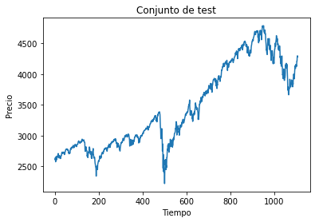
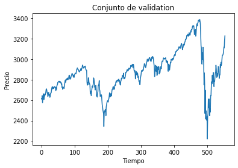
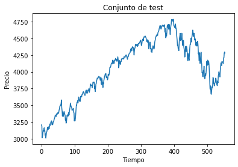
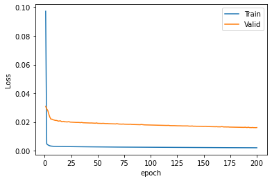
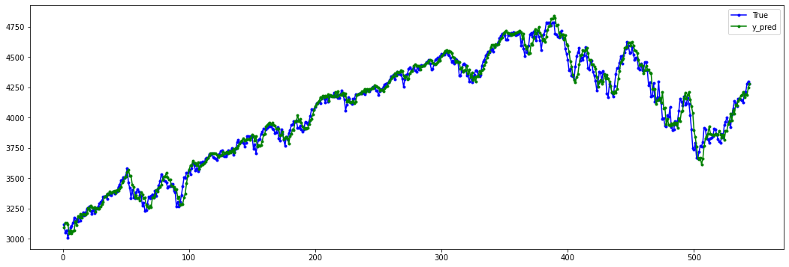

Ejemplo pronóstico serie de tiempo¶
En este ejemplo se hará el pronóstico a una serie de tiempo con una red neuronal artificial Feedforward.
import pandas as pd
import numpy as np
import matplotlib.pyplot as plt
import yfinance as yf
Descargar datos desde Yahoo Finance:¶
Se usa la librería yfinance.
Se descarga la información del Futuro E-Mini Standard and Poors 500. El nemotécnico en la bolsa es ES.
tickers = ["ES=F"]
ohlc = yf.download(tickers, period="max")
print(ohlc.tail())
[*******************100%*********************] 1 of 1 completed
Open High Low Close Adj Close Volume
Date
2022-08-10 4128.75 4213.50 4113.75 4210.00 4210.00 1627940
2022-08-11 4210.75 4260.50 4202.75 4209.75 4209.75 1598130
2022-08-12 4219.25 4282.75 4208.25 4281.00 4281.00 1300170
2022-08-15 4277.00 4304.75 4249.00 4298.25 4298.25 1300170
2022-08-16 4294.50 4300.25 4278.75 4281.00 4281.00 440850
df = ohlc["Adj Close"].dropna(how="all")
df.tail()
Date
2022-08-10 4210.00
2022-08-11 4209.75
2022-08-12 4281.00
2022-08-15 4298.25
2022-08-16 4281.00
Name: Adj Close, dtype: float64
df.shape
(5538,)
df = np.array(df[:, np.newaxis])
df.shape
C:UsersmigueAppDataLocalTempipykernel_78121662533070.py:1: FutureWarning: Support for multi-dimensional indexing (e.g. obj[:, None]) is deprecated and will be removed in a future version. Convert to a numpy array before indexing instead. df = np.array(df[:, np.newaxis])
(5538, 1)
plt.figure(figsize = (10,6))
plt.plot(df);

Conjunto de train y test:¶
La división del dataset no debe hacerse igual que los problemas de regresión o clasificación, en este caso la secuencia de los datos es muy importante.
Los primeros datos, que son los más lejanos se usan como conjunto de train y los más reciente como conjunto de test.
En caso de dividir el dataset en tres conjuntos: train, validation y test, el conjunto de test siempre tiene los datos más recientes.
Primero haremos un ejemplo donde se usará solo el conjunto de train y test. El 20% de los datos más recientes serán de test y el 80% más lejano serán para entrenar el modelo.
time_test = 0.20
int(len(df)*(1-time_test))
4430
train = df[:int(len(df)*(1-time_test))]
test = df[int(len(df)*(1-time_test)):]
train.shape
(4430, 1)
test.shape
(1108, 1)
De forma alternativa se puede usar el siguiente código para dividir los datos en función de una cantidad de períodos en lugar de un porcentaje, por ejemplo, para tener los últimos 200 períodos para el conjunto de test:
time_test = 200
train = df[:len(df)-time_test]
test = df[len(df)-time_test:]
plt.plot(train)
plt.xlabel("Tiempo")
plt.ylabel("Precio")
plt.title("Conjunto de train")
plt.show()
plt.plot(test)
plt.xlabel("Tiempo")
plt.ylabel("Precio")
plt.title("Conjunto de test")
plt.show()


Estandarización de las variables:¶
from sklearn.preprocessing import StandardScaler
sc = StandardScaler()
sc.fit(train)
train = sc.transform(train)
test = sc.transform(test)
train[0:5]
array([[0.03929417],
[0.0633008 ],
[0.04365901],
[0.04365901],
[0.04147659]])
test[0:5]
array([[2.54525911],
[2.52725414],
[2.60473009],
[2.45632546],
[2.53980306]])
Función para conformar el dataset para datos secuenciales:
[time_step, Features]
def split_sequence(sequence, time_step):
X, y = list(), list()
for i in range(len(sequence)):
end_ix = i + time_step
if end_ix > len(sequence) - 1:
break
seq_x, seq_y = sequence[i:end_ix], sequence[end_ix]
X.append(seq_x)
y.append(seq_y)
return np.array(X), np.array(y)
Se usarán 10 datos secuenciales para predicir el siguiente valor.
time_step = 10
X_train, y_train = split_sequence(train, time_step)
X_test, y_test = split_sequence(test, time_step)
Arquitectura de la red:¶
Entrenamiento con el conjunto de train y evaluación con el conjunto de test:
from keras.models import Sequential
from keras.layers import Dense
model = Sequential()
model.add(Dense(10, activation="relu", input_shape=(time_step,)))
model.add(Dense(1))
model.compile(optimizer="sgd", loss="mse")
history = model.fit(
X_train,
y_train,
validation_data=(X_test, y_test),
epochs=200,
batch_size=100,
verbose=1,
)
Epoch 1/200
45/45 [==============================] - 0s 4ms/step - loss: 0.2493 - val_loss: 0.0593
Epoch 2/200
45/45 [==============================] - 0s 2ms/step - loss: 0.0075 - val_loss: 0.0530
Epoch 3/200
45/45 [==============================] - 0s 1ms/step - loss: 0.0057 - val_loss: 0.0423
Epoch 4/200
45/45 [==============================] - 0s 1ms/step - loss: 0.0047 - val_loss: 0.0413
Epoch 5/200
45/45 [==============================] - 0s 1ms/step - loss: 0.0042 - val_loss: 0.0370
Epoch 6/200
45/45 [==============================] - 0s 1ms/step - loss: 0.0039 - val_loss: 0.0360
Epoch 7/200
45/45 [==============================] - 0s 1ms/step - loss: 0.0037 - val_loss: 0.0349
Epoch 8/200
45/45 [==============================] - 0s 2ms/step - loss: 0.0036 - val_loss: 0.0356
Epoch 9/200
45/45 [==============================] - 0s 1ms/step - loss: 0.0035 - val_loss: 0.0346
Epoch 10/200
45/45 [==============================] - 0s 1ms/step - loss: 0.0034 - val_loss: 0.0347
Epoch 11/200
45/45 [==============================] - 0s 2ms/step - loss: 0.0034 - val_loss: 0.0344
Epoch 12/200
45/45 [==============================] - 0s 1ms/step - loss: 0.0034 - val_loss: 0.0344
Epoch 13/200
45/45 [==============================] - 0s 1ms/step - loss: 0.0033 - val_loss: 0.0343
Epoch 14/200
45/45 [==============================] - 0s 1ms/step - loss: 0.0033 - val_loss: 0.0342
Epoch 15/200
45/45 [==============================] - 0s 1ms/step - loss: 0.0033 - val_loss: 0.0341
Epoch 16/200
45/45 [==============================] - 0s 1ms/step - loss: 0.0033 - val_loss: 0.0340
Epoch 17/200
45/45 [==============================] - 0s 1ms/step - loss: 0.0033 - val_loss: 0.0339
Epoch 18/200
45/45 [==============================] - 0s 1ms/step - loss: 0.0033 - val_loss: 0.0362
Epoch 19/200
45/45 [==============================] - 0s 1ms/step - loss: 0.0032 - val_loss: 0.0340
Epoch 20/200
45/45 [==============================] - 0s 1ms/step - loss: 0.0032 - val_loss: 0.0337
Epoch 21/200
45/45 [==============================] - 0s 1ms/step - loss: 0.0032 - val_loss: 0.0339
Epoch 22/200
45/45 [==============================] - 0s 1ms/step - loss: 0.0032 - val_loss: 0.0342
Epoch 23/200
45/45 [==============================] - 0s 1ms/step - loss: 0.0032 - val_loss: 0.0338
Epoch 24/200
45/45 [==============================] - 0s 1ms/step - loss: 0.0032 - val_loss: 0.0334
Epoch 25/200
45/45 [==============================] - 0s 1ms/step - loss: 0.0032 - val_loss: 0.0334
Epoch 26/200
45/45 [==============================] - 0s 1ms/step - loss: 0.0031 - val_loss: 0.0332
Epoch 27/200
45/45 [==============================] - 0s 1ms/step - loss: 0.0031 - val_loss: 0.0334
Epoch 28/200
45/45 [==============================] - 0s 1ms/step - loss: 0.0031 - val_loss: 0.0331
Epoch 29/200
45/45 [==============================] - 0s 1ms/step - loss: 0.0031 - val_loss: 0.0330
Epoch 30/200
45/45 [==============================] - 0s 1ms/step - loss: 0.0031 - val_loss: 0.0330
Epoch 31/200
45/45 [==============================] - 0s 1ms/step - loss: 0.0031 - val_loss: 0.0328
Epoch 32/200
45/45 [==============================] - 0s 1ms/step - loss: 0.0031 - val_loss: 0.0330
Epoch 33/200
45/45 [==============================] - 0s 1ms/step - loss: 0.0031 - val_loss: 0.0334
Epoch 34/200
45/45 [==============================] - 0s 1ms/step - loss: 0.0031 - val_loss: 0.0326
Epoch 35/200
45/45 [==============================] - 0s 1ms/step - loss: 0.0031 - val_loss: 0.0326
Epoch 36/200
45/45 [==============================] - 0s 1ms/step - loss: 0.0030 - val_loss: 0.0324
Epoch 37/200
45/45 [==============================] - 0s 1ms/step - loss: 0.0030 - val_loss: 0.0324
Epoch 38/200
45/45 [==============================] - 0s 1ms/step - loss: 0.0030 - val_loss: 0.0324
Epoch 39/200
45/45 [==============================] - 0s 1ms/step - loss: 0.0030 - val_loss: 0.0324
Epoch 40/200
45/45 [==============================] - 0s 1ms/step - loss: 0.0030 - val_loss: 0.0323
Epoch 41/200
45/45 [==============================] - 0s 1ms/step - loss: 0.0030 - val_loss: 0.0321
Epoch 42/200
45/45 [==============================] - 0s 1ms/step - loss: 0.0030 - val_loss: 0.0320
Epoch 43/200
45/45 [==============================] - 0s 1ms/step - loss: 0.0030 - val_loss: 0.0319
Epoch 44/200
45/45 [==============================] - 0s 1ms/step - loss: 0.0030 - val_loss: 0.0320
Epoch 45/200
45/45 [==============================] - 0s 1ms/step - loss: 0.0030 - val_loss: 0.0318
Epoch 46/200
45/45 [==============================] - 0s 1ms/step - loss: 0.0030 - val_loss: 0.0318
Epoch 47/200
45/45 [==============================] - 0s 1ms/step - loss: 0.0029 - val_loss: 0.0322
Epoch 48/200
45/45 [==============================] - 0s 1ms/step - loss: 0.0029 - val_loss: 0.0316
Epoch 49/200
45/45 [==============================] - 0s 1ms/step - loss: 0.0029 - val_loss: 0.0320
Epoch 50/200
45/45 [==============================] - 0s 1ms/step - loss: 0.0029 - val_loss: 0.0314
Epoch 51/200
45/45 [==============================] - 0s 1ms/step - loss: 0.0029 - val_loss: 0.0316
Epoch 52/200
45/45 [==============================] - 0s 1ms/step - loss: 0.0029 - val_loss: 0.0313
Epoch 53/200
45/45 [==============================] - 0s 1ms/step - loss: 0.0029 - val_loss: 0.0312
Epoch 54/200
45/45 [==============================] - 0s 1ms/step - loss: 0.0029 - val_loss: 0.0311
Epoch 55/200
45/45 [==============================] - 0s 1ms/step - loss: 0.0029 - val_loss: 0.0311
Epoch 56/200
45/45 [==============================] - 0s 1ms/step - loss: 0.0029 - val_loss: 0.0311
Epoch 57/200
45/45 [==============================] - 0s 1ms/step - loss: 0.0029 - val_loss: 0.0311
Epoch 58/200
45/45 [==============================] - 0s 1ms/step - loss: 0.0029 - val_loss: 0.0309
Epoch 59/200
45/45 [==============================] - 0s 1ms/step - loss: 0.0029 - val_loss: 0.0311
Epoch 60/200
45/45 [==============================] - 0s 2ms/step - loss: 0.0028 - val_loss: 0.0307
Epoch 61/200
45/45 [==============================] - 0s 1ms/step - loss: 0.0028 - val_loss: 0.0307
Epoch 62/200
45/45 [==============================] - 0s 1ms/step - loss: 0.0028 - val_loss: 0.0307
Epoch 63/200
45/45 [==============================] - 0s 1ms/step - loss: 0.0028 - val_loss: 0.0305
Epoch 64/200
45/45 [==============================] - 0s 1ms/step - loss: 0.0028 - val_loss: 0.0305
Epoch 65/200
45/45 [==============================] - 0s 1ms/step - loss: 0.0028 - val_loss: 0.0304
Epoch 66/200
45/45 [==============================] - 0s 1ms/step - loss: 0.0028 - val_loss: 0.0303
Epoch 67/200
45/45 [==============================] - 0s 1ms/step - loss: 0.0028 - val_loss: 0.0303
Epoch 68/200
45/45 [==============================] - 0s 1ms/step - loss: 0.0028 - val_loss: 0.0303
Epoch 69/200
45/45 [==============================] - 0s 2ms/step - loss: 0.0028 - val_loss: 0.0301
Epoch 70/200
45/45 [==============================] - 0s 1ms/step - loss: 0.0028 - val_loss: 0.0302
Epoch 71/200
45/45 [==============================] - 0s 1ms/step - loss: 0.0028 - val_loss: 0.0300
Epoch 72/200
45/45 [==============================] - 0s 1ms/step - loss: 0.0028 - val_loss: 0.0307
Epoch 73/200
45/45 [==============================] - 0s 1ms/step - loss: 0.0027 - val_loss: 0.0299
Epoch 74/200
45/45 [==============================] - 0s 1ms/step - loss: 0.0027 - val_loss: 0.0298
Epoch 75/200
45/45 [==============================] - 0s 1ms/step - loss: 0.0027 - val_loss: 0.0301
Epoch 76/200
45/45 [==============================] - 0s 1ms/step - loss: 0.0027 - val_loss: 0.0297
Epoch 77/200
45/45 [==============================] - 0s 1ms/step - loss: 0.0027 - val_loss: 0.0296
Epoch 78/200
45/45 [==============================] - 0s 1ms/step - loss: 0.0027 - val_loss: 0.0296
Epoch 79/200
45/45 [==============================] - 0s 1ms/step - loss: 0.0027 - val_loss: 0.0294
Epoch 80/200
45/45 [==============================] - 0s 1ms/step - loss: 0.0027 - val_loss: 0.0294
Epoch 81/200
45/45 [==============================] - 0s 1ms/step - loss: 0.0027 - val_loss: 0.0294
Epoch 82/200
45/45 [==============================] - 0s 1ms/step - loss: 0.0027 - val_loss: 0.0293
Epoch 83/200
45/45 [==============================] - 0s 1ms/step - loss: 0.0027 - val_loss: 0.0293
Epoch 84/200
45/45 [==============================] - 0s 1ms/step - loss: 0.0027 - val_loss: 0.0292
Epoch 85/200
45/45 [==============================] - 0s 1ms/step - loss: 0.0027 - val_loss: 0.0292
Epoch 86/200
45/45 [==============================] - 0s 1ms/step - loss: 0.0027 - val_loss: 0.0291
Epoch 87/200
45/45 [==============================] - 0s 1ms/step - loss: 0.0027 - val_loss: 0.0289
Epoch 88/200
45/45 [==============================] - 0s 1ms/step - loss: 0.0027 - val_loss: 0.0289
Epoch 89/200
45/45 [==============================] - 0s 1ms/step - loss: 0.0027 - val_loss: 0.0289
Epoch 90/200
45/45 [==============================] - 0s 1ms/step - loss: 0.0026 - val_loss: 0.0288
Epoch 91/200
45/45 [==============================] - 0s 1ms/step - loss: 0.0026 - val_loss: 0.0287
Epoch 92/200
45/45 [==============================] - 0s 1ms/step - loss: 0.0026 - val_loss: 0.0287
Epoch 93/200
45/45 [==============================] - 0s 2ms/step - loss: 0.0026 - val_loss: 0.0287
Epoch 94/200
45/45 [==============================] - 0s 1ms/step - loss: 0.0026 - val_loss: 0.0285
Epoch 95/200
45/45 [==============================] - 0s 1ms/step - loss: 0.0026 - val_loss: 0.0285
Epoch 96/200
45/45 [==============================] - 0s 1ms/step - loss: 0.0026 - val_loss: 0.0284
Epoch 97/200
45/45 [==============================] - 0s 1ms/step - loss: 0.0026 - val_loss: 0.0283
Epoch 98/200
45/45 [==============================] - 0s 1ms/step - loss: 0.0026 - val_loss: 0.0284
Epoch 99/200
45/45 [==============================] - 0s 1ms/step - loss: 0.0026 - val_loss: 0.0283
Epoch 100/200
45/45 [==============================] - 0s 1ms/step - loss: 0.0026 - val_loss: 0.0282
Epoch 101/200
45/45 [==============================] - 0s 1ms/step - loss: 0.0026 - val_loss: 0.0284
Epoch 102/200
45/45 [==============================] - 0s 1ms/step - loss: 0.0026 - val_loss: 0.0287
Epoch 103/200
45/45 [==============================] - 0s 1ms/step - loss: 0.0026 - val_loss: 0.0280
Epoch 104/200
45/45 [==============================] - 0s 1ms/step - loss: 0.0026 - val_loss: 0.0280
Epoch 105/200
45/45 [==============================] - 0s 1ms/step - loss: 0.0026 - val_loss: 0.0281
Epoch 106/200
45/45 [==============================] - 0s 1ms/step - loss: 0.0026 - val_loss: 0.0279
Epoch 107/200
45/45 [==============================] - 0s 1ms/step - loss: 0.0026 - val_loss: 0.0316
Epoch 108/200
45/45 [==============================] - 0s 1ms/step - loss: 0.0026 - val_loss: 0.0277
Epoch 109/200
45/45 [==============================] - 0s 2ms/step - loss: 0.0025 - val_loss: 0.0279
Epoch 110/200
45/45 [==============================] - 0s 2ms/step - loss: 0.0025 - val_loss: 0.0276
Epoch 111/200
45/45 [==============================] - 0s 2ms/step - loss: 0.0025 - val_loss: 0.0277
Epoch 112/200
45/45 [==============================] - 0s 1ms/step - loss: 0.0025 - val_loss: 0.0275
Epoch 113/200
45/45 [==============================] - 0s 1ms/step - loss: 0.0025 - val_loss: 0.0274
Epoch 114/200
45/45 [==============================] - 0s 1ms/step - loss: 0.0025 - val_loss: 0.0275
Epoch 115/200
45/45 [==============================] - 0s 1ms/step - loss: 0.0025 - val_loss: 0.0273
Epoch 116/200
45/45 [==============================] - 0s 1ms/step - loss: 0.0025 - val_loss: 0.0272
Epoch 117/200
45/45 [==============================] - 0s 1ms/step - loss: 0.0025 - val_loss: 0.0273
Epoch 118/200
45/45 [==============================] - 0s 1ms/step - loss: 0.0025 - val_loss: 0.0272
Epoch 119/200
45/45 [==============================] - 0s 1ms/step - loss: 0.0025 - val_loss: 0.0271
Epoch 120/200
45/45 [==============================] - 0s 1ms/step - loss: 0.0025 - val_loss: 0.0271
Epoch 121/200
45/45 [==============================] - 0s 1ms/step - loss: 0.0025 - val_loss: 0.0270
Epoch 122/200
45/45 [==============================] - 0s 1ms/step - loss: 0.0025 - val_loss: 0.0270
Epoch 123/200
45/45 [==============================] - 0s 1ms/step - loss: 0.0025 - val_loss: 0.0269
Epoch 124/200
45/45 [==============================] - 0s 2ms/step - loss: 0.0025 - val_loss: 0.0274
Epoch 125/200
45/45 [==============================] - 0s 1ms/step - loss: 0.0025 - val_loss: 0.0267
Epoch 126/200
45/45 [==============================] - 0s 1ms/step - loss: 0.0025 - val_loss: 0.0267
Epoch 127/200
45/45 [==============================] - 0s 1ms/step - loss: 0.0025 - val_loss: 0.0266
Epoch 128/200
45/45 [==============================] - 0s 1ms/step - loss: 0.0024 - val_loss: 0.0266
Epoch 129/200
45/45 [==============================] - 0s 1ms/step - loss: 0.0024 - val_loss: 0.0265
Epoch 130/200
45/45 [==============================] - 0s 1ms/step - loss: 0.0024 - val_loss: 0.0271
Epoch 131/200
45/45 [==============================] - 0s 1ms/step - loss: 0.0024 - val_loss: 0.0265
Epoch 132/200
45/45 [==============================] - 0s 2ms/step - loss: 0.0024 - val_loss: 0.0298
Epoch 133/200
45/45 [==============================] - 0s 1ms/step - loss: 0.0024 - val_loss: 0.0263
Epoch 134/200
45/45 [==============================] - 0s 2ms/step - loss: 0.0024 - val_loss: 0.0267
Epoch 135/200
45/45 [==============================] - 0s 1ms/step - loss: 0.0024 - val_loss: 0.0262
Epoch 136/200
45/45 [==============================] - 0s 1ms/step - loss: 0.0024 - val_loss: 0.0264
Epoch 137/200
45/45 [==============================] - 0s 1ms/step - loss: 0.0024 - val_loss: 0.0261
Epoch 138/200
45/45 [==============================] - 0s 1ms/step - loss: 0.0024 - val_loss: 0.0262
Epoch 139/200
45/45 [==============================] - 0s 1ms/step - loss: 0.0024 - val_loss: 0.0261
Epoch 140/200
45/45 [==============================] - 0s 1ms/step - loss: 0.0024 - val_loss: 0.0260
Epoch 141/200
45/45 [==============================] - 0s 1ms/step - loss: 0.0024 - val_loss: 0.0260
Epoch 142/200
45/45 [==============================] - 0s 1ms/step - loss: 0.0024 - val_loss: 0.0262
Epoch 143/200
45/45 [==============================] - 0s 1ms/step - loss: 0.0024 - val_loss: 0.0258
Epoch 144/200
45/45 [==============================] - 0s 1ms/step - loss: 0.0024 - val_loss: 0.0258
Epoch 145/200
45/45 [==============================] - 0s 1ms/step - loss: 0.0024 - val_loss: 0.0257
Epoch 146/200
45/45 [==============================] - 0s 1ms/step - loss: 0.0024 - val_loss: 0.0256
Epoch 147/200
45/45 [==============================] - 0s 1ms/step - loss: 0.0024 - val_loss: 0.0258
Epoch 148/200
45/45 [==============================] - 0s 1ms/step - loss: 0.0024 - val_loss: 0.0256
Epoch 149/200
45/45 [==============================] - 0s 1ms/step - loss: 0.0024 - val_loss: 0.0255
Epoch 150/200
45/45 [==============================] - 0s 1ms/step - loss: 0.0023 - val_loss: 0.0260
Epoch 151/200
45/45 [==============================] - 0s 1ms/step - loss: 0.0023 - val_loss: 0.0256
Epoch 152/200
45/45 [==============================] - 0s 1ms/step - loss: 0.0023 - val_loss: 0.0255
Epoch 153/200
45/45 [==============================] - 0s 1ms/step - loss: 0.0023 - val_loss: 0.0254
Epoch 154/200
45/45 [==============================] - 0s 1ms/step - loss: 0.0023 - val_loss: 0.0253
Epoch 155/200
45/45 [==============================] - 0s 1ms/step - loss: 0.0023 - val_loss: 0.0253
Epoch 156/200
45/45 [==============================] - 0s 1ms/step - loss: 0.0023 - val_loss: 0.0252
Epoch 157/200
45/45 [==============================] - 0s 1ms/step - loss: 0.0023 - val_loss: 0.0251
Epoch 158/200
45/45 [==============================] - 0s 1ms/step - loss: 0.0023 - val_loss: 0.0252
Epoch 159/200
45/45 [==============================] - 0s 1ms/step - loss: 0.0023 - val_loss: 0.0253
Epoch 160/200
45/45 [==============================] - 0s 1ms/step - loss: 0.0023 - val_loss: 0.0281
Epoch 161/200
45/45 [==============================] - 0s 1ms/step - loss: 0.0023 - val_loss: 0.0249
Epoch 162/200
45/45 [==============================] - 0s 1ms/step - loss: 0.0023 - val_loss: 0.0252
Epoch 163/200
45/45 [==============================] - 0s 1ms/step - loss: 0.0023 - val_loss: 0.0249
Epoch 164/200
45/45 [==============================] - 0s 1ms/step - loss: 0.0023 - val_loss: 0.0249
Epoch 165/200
45/45 [==============================] - 0s 1ms/step - loss: 0.0023 - val_loss: 0.0249
Epoch 166/200
45/45 [==============================] - 0s 1ms/step - loss: 0.0023 - val_loss: 0.0249
Epoch 167/200
45/45 [==============================] - 0s 1ms/step - loss: 0.0023 - val_loss: 0.0279
Epoch 168/200
45/45 [==============================] - 0s 1ms/step - loss: 0.0023 - val_loss: 0.0247
Epoch 169/200
45/45 [==============================] - 0s 1ms/step - loss: 0.0023 - val_loss: 0.0259
Epoch 170/200
45/45 [==============================] - 0s 1ms/step - loss: 0.0023 - val_loss: 0.0245
Epoch 171/200
45/45 [==============================] - 0s 1ms/step - loss: 0.0023 - val_loss: 0.0248
Epoch 172/200
45/45 [==============================] - 0s 1ms/step - loss: 0.0023 - val_loss: 0.0245
Epoch 173/200
45/45 [==============================] - 0s 2ms/step - loss: 0.0022 - val_loss: 0.0247
Epoch 174/200
45/45 [==============================] - 0s 2ms/step - loss: 0.0022 - val_loss: 0.0243
Epoch 175/200
45/45 [==============================] - 0s 1ms/step - loss: 0.0022 - val_loss: 0.0288
Epoch 176/200
45/45 [==============================] - 0s 1ms/step - loss: 0.0022 - val_loss: 0.0247
Epoch 177/200
45/45 [==============================] - 0s 2ms/step - loss: 0.0022 - val_loss: 0.0242
Epoch 178/200
45/45 [==============================] - 0s 2ms/step - loss: 0.0022 - val_loss: 0.0242
Epoch 179/200
45/45 [==============================] - 0s 1ms/step - loss: 0.0022 - val_loss: 0.0241
Epoch 180/200
45/45 [==============================] - 0s 1ms/step - loss: 0.0022 - val_loss: 0.0241
Epoch 181/200
45/45 [==============================] - 0s 1ms/step - loss: 0.0022 - val_loss: 0.0241
Epoch 182/200
45/45 [==============================] - 0s 2ms/step - loss: 0.0022 - val_loss: 0.0240
Epoch 183/200
45/45 [==============================] - 0s 1ms/step - loss: 0.0022 - val_loss: 0.0240
Epoch 184/200
45/45 [==============================] - 0s 1ms/step - loss: 0.0022 - val_loss: 0.0239
Epoch 185/200
45/45 [==============================] - 0s 1ms/step - loss: 0.0022 - val_loss: 0.0239
Epoch 186/200
45/45 [==============================] - 0s 1ms/step - loss: 0.0022 - val_loss: 0.0240
Epoch 187/200
45/45 [==============================] - 0s 1ms/step - loss: 0.0022 - val_loss: 0.0241
Epoch 188/200
45/45 [==============================] - 0s 2ms/step - loss: 0.0022 - val_loss: 0.0243
Epoch 189/200
45/45 [==============================] - 0s 2ms/step - loss: 0.0022 - val_loss: 0.0237
Epoch 190/200
45/45 [==============================] - 0s 2ms/step - loss: 0.0022 - val_loss: 0.0237
Epoch 191/200
45/45 [==============================] - 0s 2ms/step - loss: 0.0022 - val_loss: 0.0243
Epoch 192/200
45/45 [==============================] - 0s 2ms/step - loss: 0.0022 - val_loss: 0.0237
Epoch 193/200
45/45 [==============================] - 0s 1ms/step - loss: 0.0022 - val_loss: 0.0255
Epoch 194/200
45/45 [==============================] - 0s 2ms/step - loss: 0.0022 - val_loss: 0.0235
Epoch 195/200
45/45 [==============================] - 0s 1ms/step - loss: 0.0022 - val_loss: 0.0235
Epoch 196/200
45/45 [==============================] - 0s 1ms/step - loss: 0.0022 - val_loss: 0.0234
Epoch 197/200
45/45 [==============================] - 0s 1ms/step - loss: 0.0022 - val_loss: 0.0237
Epoch 198/200
45/45 [==============================] - 0s 1ms/step - loss: 0.0022 - val_loss: 0.0234
Epoch 199/200
45/45 [==============================] - 0s 1ms/step - loss: 0.0022 - val_loss: 0.0247
Epoch 200/200
45/45 [==============================] - 0s 2ms/step - loss: 0.0022 - val_loss: 0.0232
Evaluación del desempeño:¶
model.evaluate(X_test, y_test)
35/35 [==============================] - 0s 778us/step - loss: 0.0232
0.023236673325300217
plt.plot(range(1, len(history.epoch) + 1), history.history["loss"], label="Train")
plt.plot(range(1, len(history.epoch) + 1), history.history["val_loss"], label="Test")
plt.xlabel("epoch")
plt.ylabel("Loss")
plt.legend();

Predicción del modelo:¶
y_pred = model.predict(X_test)
y_pred[0:5]
35/35 [==============================] - 0s 732us/step
array([[2.587662 ],
[2.5948231],
[2.6290014],
[2.6076844],
[2.611197 ]], dtype=float32)
X_test.shape
(1098, 10, 1)
y_pred.shape
(1098, 1)
plt.figure(figsize=(18, 6))
plt.plot(
range(1, len(X_test) + 1),
test[time_step:,:],
color="b",
marker=".",
linestyle="-",
label="True",
)
plt.plot(
range(1, len(X_test) + 1),
y_pred,
color="g",
marker=".",
linestyle="-",
label="y_pred",
)
plt.legend();

La anterior figura muestra los resultados con los datos escalados.
Predicción del modelo con valores sin escalar:¶
Para escalar los datos se usó sc.transform(), ahora, para escalarlos
de nuevo a la representación original se usa sc.inverse_transform().
test = sc.inverse_transform(test)
X_test, y_test = split_sequence(test, time_step)
X_test[0:1]
array([[[2615.75],
[2607.5 ],
[2643. ],
[2575. ],
[2613.25],
[2647. ],
[2661.75],
[2605.75],
[2619. ],
[2655. ]]])
X_test.shape
(1098, 10, 1)
y_pred = model.predict(X_test)
y_pred[0:5]
35/35 [==============================] - 0s 704us/step
array([[2631.7852],
[2635.0664],
[2650.7275],
[2640.9595],
[2642.5693]], dtype=float32)
plt.figure(figsize=(18, 6))
plt.plot(
test,
color="b",
marker=".",
linestyle="-",
label="True",
)
plt.plot(
y_pred,
color="g",
marker=".",
linestyle="-",
label="y_pred",
)
plt.legend();

Predicción fuera de la muestra:¶
Para la predicción fuera de la muestra solo tenemos el último batch para predecir el primer valor fuera de la muestra. Este batch son los últimos precios reales del histórico de datos.
Para predecir el segundo valor por fuera de la muestra tenemos el batch con los valores reales más recientes, pero faltaría un elemento. El elemento faltante para completar el batch será la predicción que se realizó anteriormente, así que este batch tiene valores reales y un valor arrojado por la red neuronal.
Para la predicción del tercer valor por fuera de la muestra tenemos un batch con valores reales, pero sin los dos datos más lejanos dentro del batch. Las dos predicciones anteriores se agregan al batch para completarlo.
De esta manera, para la predicción por fuera de la muestra se agregan las predicciones como entradas a la red neuronal.
Último batch de los valores reales:
df[-time_step:,0]
array([4156.25, 4152.25, 4146.75, 4141.75, 4124.5 , 4210. , 4209.75,
4281. , 4298.25, 4281. ])
Se crea un loop que haga las predicciones con el modelo entrenado y agregue cada predicción al batch y al mismo tiempo los primeros valores del batch van saliendo a medida que se agregan predicciones nuevas.
Predicción fuera de la muestra para 20 períodos:
predictions = []
time_prediction = 20 # cantidad de predicciones fuera de la muestra
first_sample = df[-time_step:,0] # última muestra dentro de la serie de tiempo
current_batch = first_sample.reshape((1, time_step)) # Transformación en muestras y time step
for i in range(time_prediction):
current_pred = model.predict(current_batch, verbose=0)[0]
# Guardar la predicción
predictions.append(current_pred)
# Actualizar el lote para incluir ahora la predicción y soltar el primer valor (primer time step)
current_batch = np.append(current_batch[:, 1:], [[current_pred]]).reshape((1, time_step))
Figura con los 100 valores reales más recientes y las 20 predicciones:
plt.figure(figsize=(10, 6))
plt.plot(
range(1, len(df[-100:,0]) + 1),
df[-100:,0],
color="b",
marker=".",
linestyle="-",
label="True",
)
plt.plot(
range(len(df[-100:,0]) + 1, len(df[-100:,0]) + len(predictions) + 1),
predictions,
color="g",
marker=".",
linestyle="-",
label="y_pred fuera de la muestra",
)
plt.legend();

Predicción fuera de la muestra para 100 períodos:
predictions = []
time_prediction = 100 # cantidad de predicciones fuera de la muestra
first_sample = df[-time_step:,0] # última muestra dentro de la serie de tiempo
current_batch = first_sample.reshape((1, time_step)) # Transformación en muestras y time step
for i in range(time_prediction):
current_pred = model.predict(current_batch, verbose=0)[0]
# Guardar la predicción
predictions.append(current_pred)
# Actualizar el lote para incluir ahora la predicción y soltar el primer valor (primer time step)
current_batch = np.append(current_batch[:, 1:], [[current_pred]]).reshape((1, time_step))
Figura con los 100 valores reales más recientes y las 100 predicciones:
plt.figure(figsize=(10, 6))
plt.plot(
range(1, len(df[-100:,0]) + 1),
df[-100:,0],
color="b",
marker=".",
linestyle="-",
label="True",
)
plt.plot(
range(len(df[-100:,0]) + 1, len(df[-100:,0]) + len(predictions) + 1),
predictions,
color="g",
marker=".",
linestyle="-",
label="y_pred fuera de la muestra",
)
plt.legend();

Conjunto de train, validation y test:¶
Entrenaremos una red neuronal artificial para realizar pronósticos de series de tiempo con el 80% del dataset de los valores más antiguos (conjunto de train), probaremos el modelo con el 10% de los valores siguientes (conjunto de validation). Compararemos la función de pérdida del conjunto de validación para ajustar el modelo y volverlo a entrenar con el conjunto de train. Después de tener un modelo que cumpla con las expectativas, finalmente volveremos a entrenar el modelo juntando el conjunto de train y validation y haremos pronósticos sobre el conjunto de test, que será el 10% de los valores más recientes.
Al ajustar los hiperparámetros de la red de acuerdo con el desempeño en el conjunto de validation, implícitamente estamos filtrando la información de este conjunto de datos. Por esta manera, se reserva el tercer conjunto de datos (conjunto de test) para evaluar el desempeño con valores que nunca ha conocido.
time_valid = 0.10
time_test = 0.10
train = df[:int(len(df)*(1 - (time_valid + time_test)))]
valid = df[int(len(df)*(1 - (time_valid + time_test))):int(len(df)*(1 - time_test))]
test = df[int(len(df)*(1 - time_test)):]
train.shape
(4430, 1)
valid.shape
(554, 1)
test.shape
(554, 1)
plt.plot(train)
plt.xlabel("Tiempo")
plt.ylabel("Precio")
plt.title("Conjunto de train")
plt.show()
plt.plot(valid)
plt.xlabel("Tiempo")
plt.ylabel("Precio")
plt.title("Conjunto de validation")
plt.show()
plt.plot(test)
plt.xlabel("Tiempo")
plt.ylabel("Precio")
plt.title("Conjunto de test")
plt.show()



Estandarización de las variables:¶
Con la información del conjunto de train se escalan los conjuntos de datos validation y test.
sc = StandardScaler()
sc.fit(train)
train = sc.transform(train)
valid = sc.transform(valid)
test = sc.transform(test)
train[0:5]
array([[0.03929417],
[0.0633008 ],
[0.04365901],
[0.04365901],
[0.04147659]])
valid[0:5]
array([[2.54525911],
[2.52725414],
[2.60473009],
[2.45632546],
[2.53980306]])
test[0:5]
array([[3.83234192],
[3.78978471],
[3.40622421],
[3.45969353],
[3.54317113]])
Función para conformar el dataset para datos secuenciales:
Se usarán 10 datos secuenciales para predicir el siguiente valor.
time_step = 10
X_train, y_train = split_sequence(train, time_step)
X_valid, y_valid = split_sequence(valid, time_step)
X_test, y_test = split_sequence(test, time_step)
X_train.shape
(4420, 10, 1)
y_train.shape
(4420, 1)
X_valid.shape
(544, 10, 1)
y_valid.shape
(544, 1)
X_test.shape
(544, 10, 1)
y_test.shape
(544, 1)
Arquitectura de la red:¶
Entrenamiento con el conjunto de train y evaluación con el conjunto de validation:
model = Sequential()
model.add(Dense(10, activation="relu", input_shape=(time_step,)))
model.add(Dense(1))
model.compile(optimizer="sgd", loss="mse")
history = model.fit(
X_train,
y_train,
validation_data=(X_valid, y_valid),
epochs=200,
batch_size=100,
verbose=0,
)
Evaluación del desempeño en el conjunto de validation:¶
model.evaluate(X_valid, y_valid)
17/17 [==============================] - 0s 962us/step - loss: 0.0162
0.01616770401597023
plt.plot(range(1, len(history.epoch) + 1), history.history["loss"], label="Train")
plt.plot(range(1, len(history.epoch) + 1), history.history["val_loss"], label="Valid")
plt.xlabel("epoch")
plt.ylabel("Loss")
plt.legend();

Entrenamiento con los conjuntos de train y validation y evaluación con el conjunto de test:
Ahora, el conjunto de train nuevo tendrá el conjunto de train y el conjunto de valid.
X_train_ = np.append(X_train, X_valid, axis = 0)
X_train_.shape
(4964, 10, 1)
y_train_ = np.append(y_train, y_valid, axis = 0)
y_train_.shape
(4964, 1)
model = Sequential()
model.add(Dense(10, activation="relu", input_shape=(time_step,)))
model.add(Dense(1))
model.compile(optimizer="sgd", loss="mse")
history = model.fit(
X_train_,
y_train_,
validation_data=(X_test, y_test),
epochs=200,
batch_size=100,
verbose=0,
)
Evaluación del desempeño en el conjunto de test:¶
model.evaluate(X_test, y_test)
17/17 [==============================] - 0s 935us/step - loss: 0.0176
0.017637114971876144
plt.plot(range(1, len(history.epoch) + 1), history.history["loss"], label="Train")
plt.plot(range(1, len(history.epoch) + 1), history.history["val_loss"], label="Test")
plt.xlabel("epoch")
plt.ylabel("Loss")
plt.legend();

Predicción del modelo con valores sin escalar:¶
test = sc.inverse_transform(test)
X_test, y_test = split_sequence(test, time_step)
y_pred = model.predict(X_test)
y_pred[0:5]
17/17 [==============================] - 0s 808us/step
array([[3096.1694],
[3129.5693],
[3128.3535],
[3119.878 ],
[3044.1484]], dtype=float32)
X_test.shape
(544, 10, 1)
y_pred.shape
(544, 1)
plt.figure(figsize=(18, 6))
plt.plot(
range(1, len(X_test) + 1),
test[time_step:,:],
color="b",
marker=".",
linestyle="-",
label="True",
)
plt.plot(
range(1, len(X_test) + 1),
y_pred,
color="g",
marker=".",
linestyle="-",
label="y_pred",
)
plt.legend();

Predicción fuera de la muestra:¶
Predicción fuera de la muestra para 20 períodos:
predictions = []
time_prediction = 20 # cantidad de predicciones fuera de la muestra
first_sample = df[-time_step:,0] # última muestra dentro de la serie de tiempo
current_batch = first_sample.reshape((1, time_step)) # Transformación en muestras y time step
for i in range(time_prediction):
current_pred = model.predict(current_batch, verbose=0)[0]
# Guardar la predicción
predictions.append(current_pred)
# Actualizar el lote para incluir ahora la predicción y soltar el primer valor (primer time step)
current_batch = np.append(current_batch[:, 1:], [[current_pred]]).reshape((1, time_step))
Figura con los 100 valores reales más recientes y las 20 predicciones:
plt.figure(figsize=(10, 6))
plt.plot(
range(1, len(df[-100:,0]) + 1),
df[-100:,0],
color="b",
marker=".",
linestyle="-",
label="True",
)
plt.plot(
range(len(df[-100:,0]) + 1, len(df[-100:,0]) + len(predictions) + 1),
predictions,
color="g",
marker=".",
linestyle="-",
label="y_pred fuera de la muestra",
)
plt.legend();